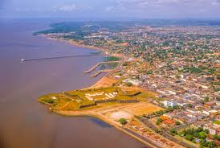

O Amapá é um estado localizado na região Norte do Brasil, fazendo fronteira com a Guiana Francesa ao norte e o estado do Pará ao sul Sua capital é Macapá, que é também a cidade mais conhecida e populosa do estado. O Amapá tem uma posição geográfica bastante singular, sendo atravessado pela linha do Equador, o que faz com que parte do estado tenha características climáticas tropicais com calor durante o ano todo. Além disso, a cidade de Macapá tem o marco da linha do Equador, um ponto turístico que simboliza a passagem entre os hemisférios Norte e Sul.
